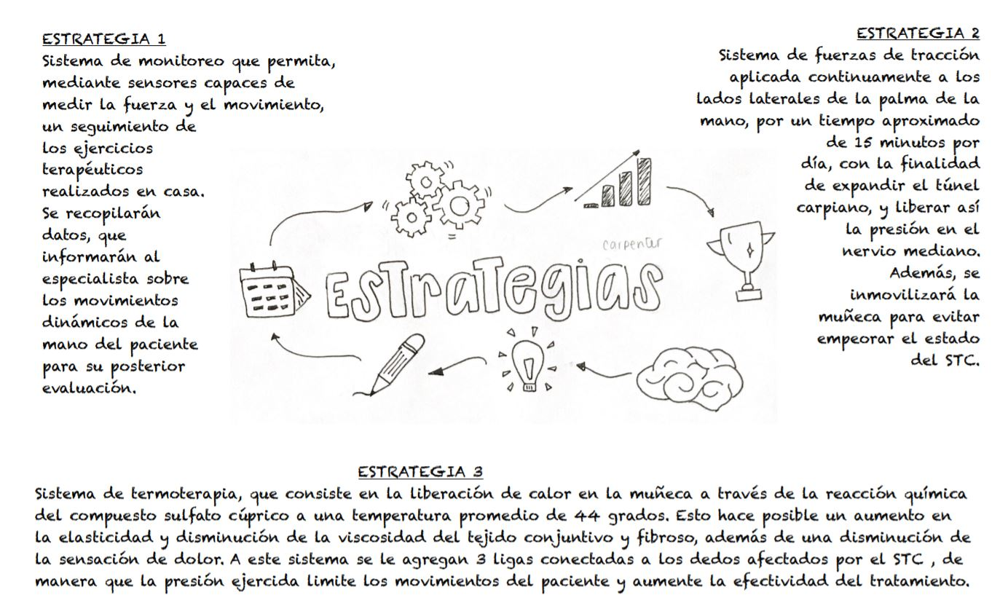

Estrategias de solución
Estrategia 1
Sistema de monitoreo que permita, mediante sensores capaces de medir la fuerza y el movimiento, un seguimiento de los ejercicios terapéuticos realizados en casa. Se recopilarán datos, que informarán al especialista sobre los movimientos dinámicos de la mano del paciente para su posterior evaluación.

Estrategia 2
Sistema que produce presión en músculos flexores, extensor y supinadores del antebrazo, lo cual lo asemeja a un torniquete, lo cual evita que se incremente la presión en el túnel carpiano y mejorando así los síntomas como dolor y hormigueo en la muñeca.

Estrategia 3
Sistema de termoterapia, que consiste en la liberación de calor en la muñeca a través de la reacción química del compuesto sulfato cúprico a una temperatura promedio de 44 * C durante un periodo de 18 minutos. Esto hace posible un aumento en la elasticidad y disminución de la viscosidad del tejido conjuntivo y fibroso, además de una disminución de la sensación de dolor. A este sistema se le agregan 3 ligas conectadas a los dedos afectados por el STC , de manera que la presión ejercida limite los movimientos del paciente y aumente la efectividad del tratamiento.

Resumen de estrategias de solución
Tabla de valoración de estrategias de solución